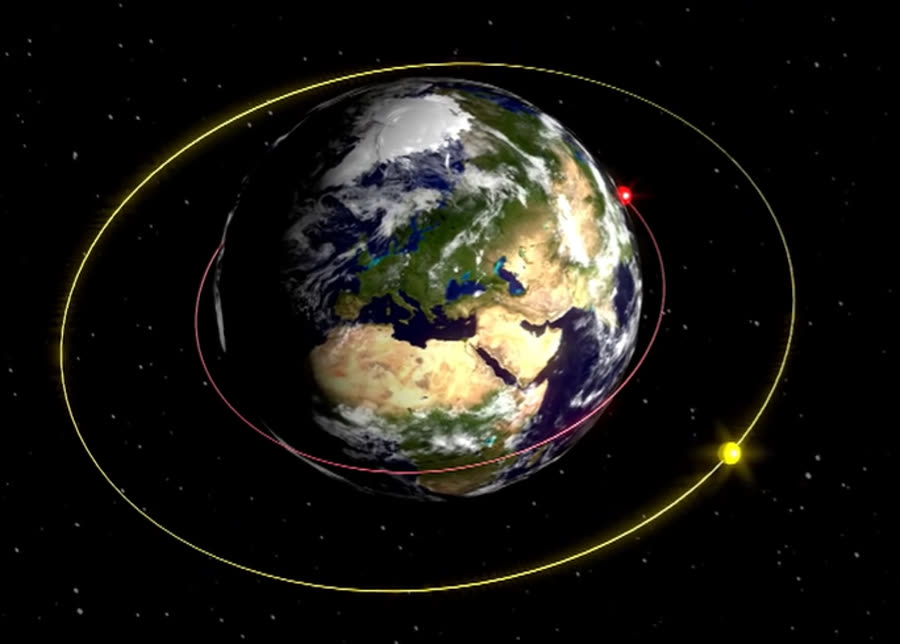
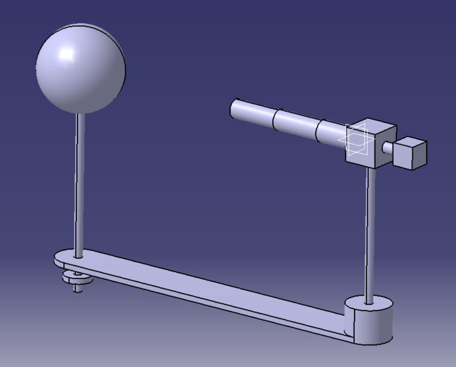
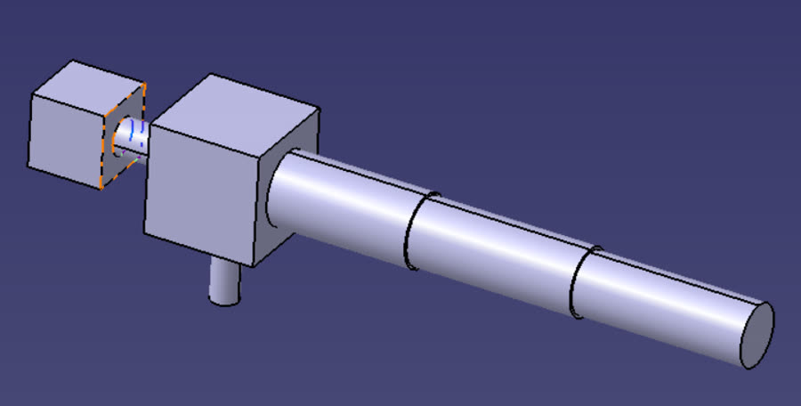

발표 · 결과

🏆 2021 Boeing Day 3등 수상 (팀 Akshan). 아이디어 스케치 → 1차 선발 → 중간점검 → 영문 병행 최종 발표까지 전 과정을 수행했습니다. 예상 질문·약점 분석을 준비하며 "아이디어를 공학적 근거로 방어하는 법"을 처음 배운 대회였고, 항공우주 진로의 출발점이 됐습니다.
Boeing이 주최한 화성 이주 아이디어 공모전 'Boeing Day: The Road to Mars'에서, 로켓 연료만으로 화성 왕복 수송을 감당하기 어렵다는 문제의식에서 출발해 스카이훅(Skyhook) — 궤도에서 회전하는 테더(케이블) 구조물로 우주선을 건져 올리고 던져 보내는 수송 시스템 — 을 제안했습니다. 1학년 때 참가한 첫 공모전으로, 항공우주 분야 진로의 출발점이 된 프로젝트입니다.



🏆 2021 Boeing Day 3등 수상 (팀 Akshan). 아이디어 스케치 → 1차 선발 → 중간점검 → 영문 병행 최종 발표까지 전 과정을 수행했습니다. 예상 질문·약점 분석을 준비하며 "아이디어를 공학적 근거로 방어하는 법"을 처음 배운 대회였고, 항공우주 진로의 출발점이 됐습니다.